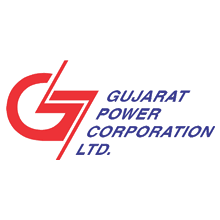

|  |
Gujarat State Electricity Corporation Limited was incorporated in August 1993 with the objectives to mobilize resources from the market for adding to the generating capacity of Gujarat and improving the quality and cost of existing generation.GSECL is involved in a wide spectrum of activities to improve the electricity infrastructure and generation of power in Gujarat and has the status of Independent Power Producer (IPP) with approval to undertake new power projects. The Company commenced its commercial operation in the year 1998.As a part of the reform process, the Government of Gujarat has unbundled the various functions of GEB and GSECL was given responsibility of electricity generation.GSECL was notified as State Generating Power Plant by Government of Gujarat on 29 May 2004 with the purpose of improving efficiency in the state’s electricity generation activities. |